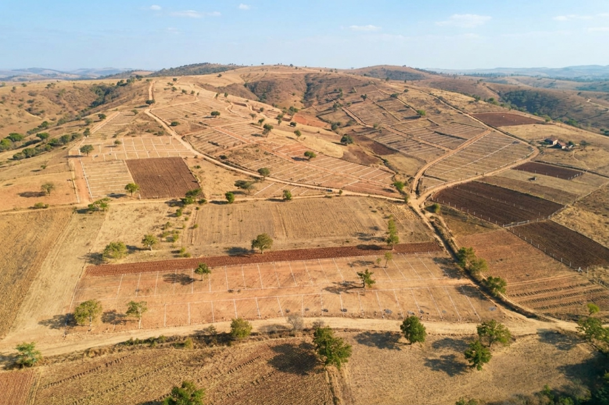

Liquidez prontaPara quien necesita liquidez
Vender subdividiendo
Dividimos su terreno en lotes y le sacamos los permisos. Cada lote pasa a valer mucho más que el paño entero en crudo —y se vende más rápido.
- Estudiamos su terreno y vemos si conviene subdividir o vender entero.
- Subdividimos y gestionamos los permisos (SAG, planos, Conservador) por usted.
- Usted vende cada lote con mucha más plusvalía que el terreno crudo.
Qué gana: obtiene un valor muy superior al del terreno crudo, sin ocuparse de los trámites ni comprometer su capital.